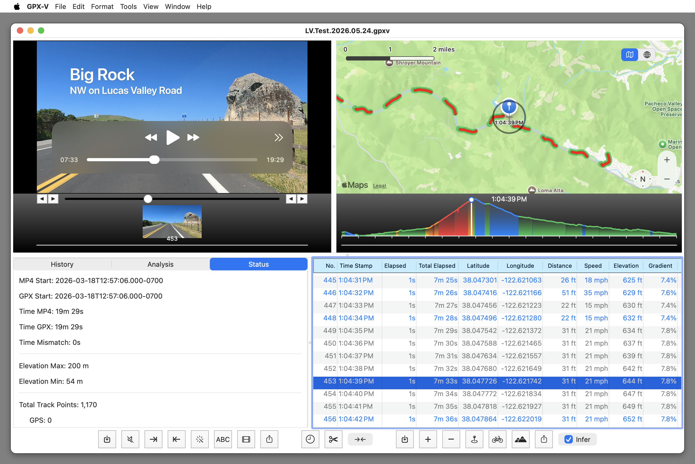

This window is where your project comes together. Import video and GPX files, synchronize them, apply filters, add titles, adjust speeds, and export synchronized video and gpx files.
All actions are available through menu items, or through the action buttons at the bottom of the window.
Move your pointer over the images below to see feature explanations.
